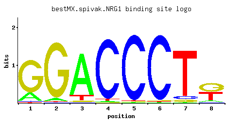

NRG1
YDR043C
Transcriptional repressor that recruits the Cyc8p-Tup1p complex to promoters; mediates glucose repression and negatively regulates a variety of processes including filamentous growth and alkaline pH response
Best-performing DNA-binding model.

View and copy the recommended matrices ↘
A | 0.186 0.048 0.861 0.012 0.009 0.009 0.011 0.083 C | 0.018 0.009 0.014 0.955 0.972 0.971 0.057 0.033 G | 0.785 0.933 0.026 0.010 0.009 0.010 0.045 0.470 T | 0.010 0.009 0.100 0.024 0.009 0.009 0.888 0.413
A | 18 4 86 1 0 0 1 8 C | 1 0 1 95 97 97 5 3 G | 78 93 2 1 0 1 4 47 T | 1 0 10 2 0 0 88 41
A | -0.54 -1.90 0.99 -3.28 -3.57 -3.57 -3.37 -1.35 C | -2.30 -3.00 -2.55 1.67 1.69 1.69 -1.15 -1.70 G | 1.47 1.65 -1.93 -2.89 -3.00 -2.89 -1.39 0.96 T | -3.47 -3.57 -1.16 -2.59 -3.57 -3.57 1.02 0.26
Alternative candidate matrices 8
Historical matrix candidates from the original ScerTF database. Expand a source to inspect its original logo, scores, and matrix values.
NRG1_AFoat et. al.P = 2.49e-36View matrix ↘
NRG1_BFoat et. al.P = 1.26e-06View matrix ↘
NRG1_CFoat et. al.P = 4.48e-08View matrix ↘
NRG1Harbison et. al.P = 9.87e-44View matrix ↘
NRG1Macisaac et. alP = 2.72e-44View matrix ↘
NRG1Pachkov et alP = 1.31e-35View matrix ↘
NRG1Zhu et. al.P = 4.71e-43View matrix ↘
NRG1Zhao and StormoP = 7.62e-36View matrix ↘
Gene-level annotations and interactions.
Genes bound in ChIP-chip experiments 136 genes
YAL017W, YAL018C, YAL022C, YAL064W, YBL029W, YBL043W, YBR040W, YBR099C, YBR157C, YDL037C, YDL122W, YDL245C, YDL246C, YDR040C, YDR041W, YDR042C, YDR043C, YDR052C, YDR077W, YDR133C, YDR134C, YDR259C, YDR343C, YDR434W, YDR441C, YDR442W, YDR535C, YDR536W, YEL007W, YEL040W, YEL069C, YEL070W, YER001W, YER011W, YER018C, YER019W, YER033C, YER034W, YER044C, YER045C, YFL059W, YFL060C, YFR017C, YGL158W, YGL227W, YGR050C, YGR218W, YGR249W, YGR277C, YGR278W, YHL041W, YHR012W, YHR033W, YHR049W, YHR138C, YHR156C, YHR157W, YHR193C, YHR194W, YHR195W, YIL019W, YIL020C, YIL040W, YIL097W, YIL098C, YIL099W, YIL118W, YIL119C, YIL122W, YIL170W, YIL171W, YIL172C, YIR013C, YIR014W, YIR020C, YJL105W, YJL216C, YJL219W, YJL221C, YJR094C, YJR102C, YJR103W, YJR158W, YJR159W, YKL044W, YKL177W, YKL179C, YKR102W, YLR012C, YLR013W, YLR023C, YLR112W, YLR221C, YLR261C, YLR262C, YLR286C, YLR413W, YMR017W, YMR056C, YMR135C, YMR135W-A, YMR136W, YMR319C, YNL111C, YNL333W, YNL334C, YNR050C, YNR060W, YNR070W, YOL028C, YOL156W, YOL157C, YOL160W, YOR010C, YOR028C, YOR029W, YOR032C, YOR049C, YOR102W, YOR138C, YOR140W, YOR151C, YOR273C, YOR274W, YOR280C, YOR282W, YOR315W, YPL018W, YPL019C, YPL021W, YPL034W, YPL230W, YPL251W, YPL253C, YPR009W, YPR013C
Genes affected by TF deletion 39 genes
YER013W, YHR146W, YGL166W, YNR060W, YOR220W, YHR179W, YPL016W, YBR098W, YMR316W, YBR093C, YBR129C, YER029C, YKL206C, YLR119W, YOR130C, YGR134W, YLR438C-A, YGL212W, YBR166C, YLR099C, YHR215W, YLR194C, YMR291W, YMR294W-A, YPL156C, YFL014W, YAR071W, YCL025C, YNL065W, YNL036W, YLR416C, YNL289W, YGR137W, YOR052C, YDR322W, YJL196C, YMR038C, YBR244W, YDR333C
Genes supported by both experiments 1 genes
YNR060W
Predicted TF–TF partners 8 genes
GIS1, MIG1, MIG3, RDR1, RGM1, RSC3, RSF2, USV1